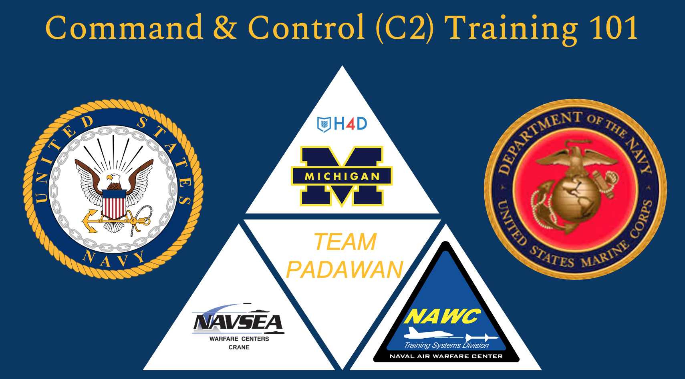
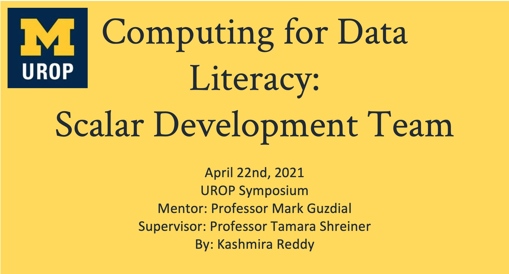

Projects
I have listed below a few of the most interesting projects I have been a part of as a student at Michigan.
C2 Training 101
We were tasked with developing a training regimen for sailors and marines to effectively utilize complex surveillance systems due to insufficient available training options.
Computing 4 Data Literacy
The project intends to increase social studies teachers’ use of online tools to aid students’ understanding of data visualizations. With increased exposure to programmable tools, the project aims to increase student performance in social studies courses and student interest in computer science.